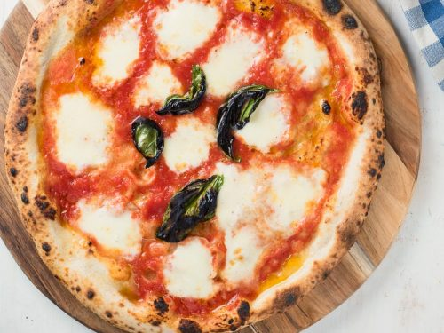

Napolitan Pizza

Description:
My favorite dish, I love to make it and eat it, napolitan pizza.
Lets learn how to make it, good luck!
Ingredients:
- 20 ounces (about 4 cups) bread flour, preferably Italian-style "OO"
- .4 ounces kosher salt (about 4 teaspoons)
- .3 ounces (about 2 teaspoons) instant yeast, such as SAF Instant Yeast
- 13 ounces water
Steps:
- Combine flour, salt, and yeast in a large bowl and whisk until homogenous. Add water and incorporate into flour using hands until no dry flour remains on bottom of bowl. Cover bowl tightly with plastic wrap and allow to rise at room temperature for 8 to 12 hours.
- Turn dough out onto lightly floured surface and divide into four even balls. Place each in a covered quart-sized deli container or in a zipper-lock freezer bag. Place in refrigerator and allow to rise at least 2 more days, and up to 4. Remove from refrigerator, shape into balls, and allow to rest at room temperature for at least 2 hours before baking.
Return to main page